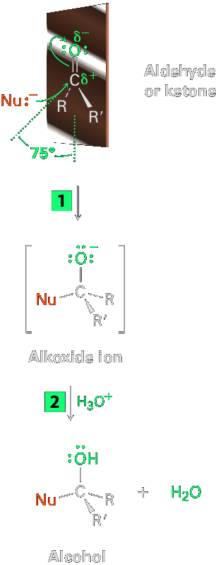

Aldehydes and ketones: nucleophilic acyl additions
One of the most common reaction themes of a carbonyl group is addition of a nucleophile to form a tetrahedral carbonyl addition compound. The carbonyl carbon atom is highly electrophilic due to a signifi cant partial positive charge as well as to the ability to accommodate a new bond through the conversion of the π bond to a lone pair on oxygen of the tetrahedral carbonyl addition compound. These reactions are often referred to as nucleophilic acyl additions. In the following general reaction, the nucleophilic reagent is written as Nu:− to emphasize the presence of its unshared pair of electrons. The Nu:− approaches the carbonyl group from an angle of about 75° opposite the carbonyl oxygen and forms a bond to the electrophilic C=O carbon atom. At the same time, rehybridization of the carbonyl carbon from sp2 to sp3 occurs, an electron pair from the C=O bond moves toward the electronegative oxygen atom, and a tetrahedral alkoxide ion intermediate is produced, all the while maintaining four bonds to carbon in the tetrahedral carbonyl addition compound. Protonation of the alkoxide by addition of acid then gives an alcohol.
The nucleophile can be either negatively charged (:Nu−) or neutral (:Nu). If it’s neutral, however, it usually carries a hydrogen atom that can subsequently be eliminated, :Nu−H. For example:
| Some negatively charged nucleophiles | OH− (hydroxide ion) |
|---|---|
| H:– (hydride ion) | |
| R3C− (a carbanion) | |
| RO– (an alkoxide ion) | |
| NC:– (cyanide ion) | |
| Some neutral nucleophiles | HOH (water) |
| ROH (an alcohol) | |
| H3N (ammonia) | |
| RNH2 (an amine) |
A second common reaction theme of a carbonyl group is reaction with a proton or other Lewis acid to form a resonance-stabilized cation. Protonation increases the electron deficiency of the carbonyl carbon and makes it more reactive toward nucleophiles. This cation then reacts with nucleophiles, followed by removal of a proton, to give a tetrahedral carbonyl addition compound.
Both of these reactivities can be predicted based on the large bond dipole of the carbonyl group. Using acetaldehyde as an example, Lewis acids such as protons are attracted to the partial negative charge of the carbonyl oxygen, while electron-rich nucleophiles are attracted to the partial positive charge of the carbonyl carbon.
Aldehydes are generally more reactive than ketones in nucleophilic addition reactions for both steric and electronic reasons. Sterically, the presence of only one large substituent bonded to the C=O carbon in an aldehyde versus two large substituents in a ketone means that a nucleophile is able to approach an aldehyde more readily. Thus, the transition state leading to the tetrahedral intermediate is less crowded and lower in energy for an aldehyde than for a ketone.
Electronically, aldehydes are more reactive than ketones because of the greater polarization of aldehyde carbonyl groups. To see this polarity difference,
recall the stability order of carbocations (Section 7.9). A primary carbocation is higher in energy and thus more reactive than a secondary carbocation because it has only one alkyl group inductively stabilizing the positive charge rather than two. In the same way, an aldehyde has only one alkyl group inductively stabilizing the partial positive charge on the carbonyl carbon rather than two, is a bit more electrophilic, and is therefore more reactive than a ketone.
Carbonyl compounds such as aldehydes and ketones undergo a wide variety of important reactions with most involving nucleophilic acyl addition. The mechanisms for these reactions are similar because almost all of the steps can be described as one of the four mechanistic elements first mentioned in Section 6.2F. When choosing among the four to begin each mechanism, look to see whether or not there is acid or strong base present. If there is a nucleophile, but no acid or base present, the reaction mechanism will begin with the nucleophlie attacking the electrophilic carbonyl carbon atom (make a new bond between a nucleophile and an electrophile). The π bond of the carbonyl breaks as the nucleophile adds. If there is acid present, the proton will add to the carbonyl oxygen atom (add a proton), a process that makes the carbonyl group even more electrophilic. In these cases, the next step will be attack of a nucleophile to the carbonyl carbon atom. In the presence of strong base, carbonyl compounds undergo a third characteristic reaction (Take a proton away) to form a very important species called an enolate anion. Often, the tetrahedral product of nucleophile addition to a carbonyl is a new chiral center. If none of the starting materials are chiral, then the two enantiomers will be created in equal amounts because the nucleophile will approach the carbonyl from either side with equal probability. As a result, the carbonyl addition product will consist of a racemic mixture.
